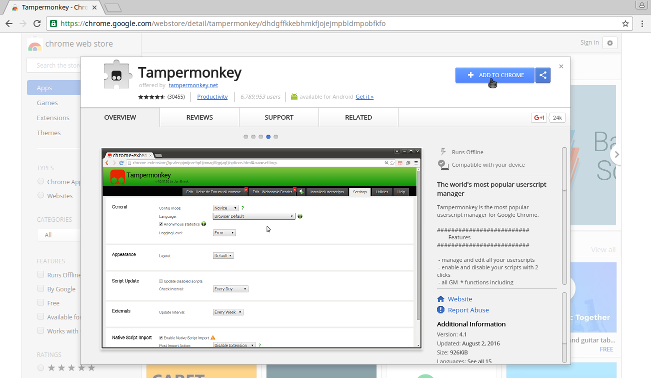
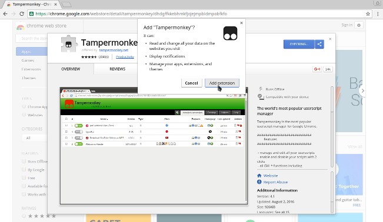
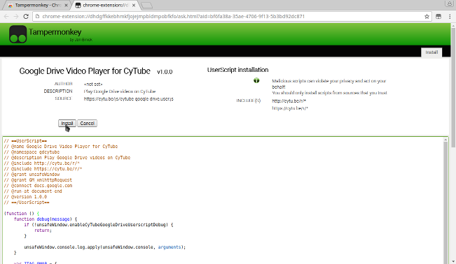

Por que instalar esse script?
O Google Drive é um filha da puta e o seu serviço de nuvem não foi feito para stream de vídeos. Essa é a explicação simples da coisa toda. Basicamente, é mais fácil fazer a manutenção do código utilizando um script para burlar certas limitações dos navegadores, por isso a necessidade de usar o Tampermonkey.
Se quiser saber mais sobre, acesse: Google Drive Userscript Installation Guide
Como instalar no Google Chrome
1. Primeiro, para ativar o script, você precisará baixar o Tampermonkey na Chrome Web Store. Segue o link da extensão: Tampermonkey
2. Confirme a instalação da extensão ao clicar no botão "Adicionar extensão...".
3. Abra o link para o script abaixo, logo você será redirecionado para a tela de instalação do script no Tampermonkey. É tudo bem simples, apenas clique em instalar.
Para instalar o script, clique aqui.
Tudo pronto meu chapa, pode ir embora.
Como instalar no Mozilla Firefox
Mesma coisa mano, só muda alguns links. Segue ae.
1. Instale o Tampermonkey para Firefox clicando aqui.
2. Abra o link para o script clicando aqui e instale da mesma forma que no Chrome.
3. Reinicie o navegador e tudo certo.